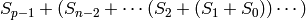
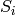

Imported libraries¶
BLAS¶
TODO: Describe overloaded wrappers around the BLAS.
LAPACK¶
TODO: Describe overloaded wrappers around LAPACK.
MPI¶
As with the wrappers for BLAS and LAPACK, the main purpose is to provide a datatype-independent interface with syntax that is more consistent with the rest of the library. As of now, the following datatypes are supported for the following routines: byte (unsigned char), int, float, double, std::complex<float>, and std::complex<double>.
Datatypes¶
- type mpi::Comm¶
Equivalent to MPI_Comm.
- type mpi::Datatype¶
Equivalent to MPI_Datatype.
- type mpi::ErrorHandler¶
Equivalent to MPI_Errhandler.
- type mpi::Group¶
Equivalent to MPI_Group.
- type mpi::Op¶
Equivalent to MPI_Op.
- type mpi::Request¶
Equivalent to MPI_Request.
- type mpi::Status¶
Equivalent to MPI_Status.
- type mpi::UserFunction¶
Equivalent to MPI_User_function.
Constants¶
- const int mpi::ANY_SOURCE¶
Equivalent to MPI_ANY_SOURCE.
- const int mpi::ANY_TAG¶
Equivalent to MPI_ANY_TAG.
- const int mpi::THREAD_SINGLE¶
Equivalent to MPI_THREAD_SINGLE.
- const int mpi::THREAD_FUNNELED¶
Equivalent to MPI_THREAD_FUNNELED.
- const int mpi::THREAD_SERIALIZED¶
Equivalent to MPI_THREAD_SERIALIZED.
- const int mpi::THREAD_MULTIPLE¶
Equivalent to MPI_THREAD_MULTIPLE.
- const int mpi::UNDEFINED¶
Equivalent to MPI_UNDEFINED.
- const mpi::Comm mpi::COMM_WORLD¶
Equivalent to MPI_COMM_WORLD.
- const mpi::ErrorHandler mpi::ERRORS_RETURN¶
Equivalent to MPI_ERRORS_RETURN.
- const mpi::ErrorHandler mpi::ERRORS_ARE_FATAL¶
Equivalent to MPI_ERRORS_ARE_FATAL.
- const mpi::Group mpi::GROUP_EMPTY¶
Equivalent to MPI_GROUP_EMPTY.
- const mpi::Request mpi::REQUEST_NULL¶
Equivalent to MPI_REQUEST_NULL.
- const mpi::Op mpi::MAX¶
Equivalent to MPI_MAX.
- const mpi::Op mpi::SUM¶
Equivalent to MPI_SUM.
- const int mpi::MIN_COLL_MSG¶
The minimum message size for collective communication, e.g., the minimum number of elements contributed by each process in an MPI_Allgather. By default, it is hardcoded to 1 in order to avoid problems with MPI implementations that do not support the 0 corner case.
Routines¶
Environmental
- void mpi::Initialize(int& argc, char**& argv)¶
Equivalent of MPI_Init (but notice the difference in the calling convention).
#include "elemental.hpp" using namespace elemental; int main( int argc, char* argv[] ) { mpi::Initialize( argc, argv ); ... mpi::Finalize(); return 0; }
- int mpi::InitializeThread(int& argc, char**& argv, int required)¶
The threaded equivalent of mpi::Initialize; the return integer indicates the level of achieved threading support, e.g., mpi::THREAD_MULTIPLE.
- void mpi::Finalize()¶
Shut down the MPI environment, freeing all of the allocated resources.
- bool mpi::Initialized()¶
Return whether or not MPI has been initialized.
- bool mpi::Finalized()¶
Return whether or not MPI has been finalized.
- double mpi::Time()¶
Return the current wall-time in seconds.
- void mpi::OpCreate(mpi::UserFunction* func, bool commutes, Op& op)¶
Create a custom operation for use in reduction routines, e.g., mpi::Reduce, mpi::AllReduce, and mpi::ReduceScatter, where mpi::UserFunction could be defined as
namespace mpi { typedef void (UserFunction) ( void* a, void* b, int* length, mpi::Datatype* datatype ); }
The commutes parameter is also important, as it specifies whether or not the operation b[i] = a[i] op b[i], for i=0,...,length-1, can be performed in an arbitrary order (for example, using a minimum spanning tree).
Communicator manipulation
- void mpi::CommCreate(mpi::Comm parentComm, mpi::Group subsetGroup, mpi::Comm& subsetComm)¶
Create a communicator (subsetComm) which is a subset of parentComm consisting of the processes specified by subsetGroup.
- void mpi::CommDup(mpi::Comm original, mpi::Comm& duplicate)¶
Create a copy of a communicator.
- void mpi::CommSplit(mpi::Comm comm, int color, int key, mpi::Comm& newComm)¶
Split the communicator comm into different subcommunicators, where each process specifies the color (unique integer) of the subcommunicator it will reside in, as well as its key (rank) for the new subcommunicator.
- void mpi::CommFree(mpi::Comm& comm)¶
Free the specified communicator.
- bool mpi::CongruentComms(mpi::Comm comm1, mpi::Comm comm2)¶
Return whether or not the two communicators consist of the same set of processes (in the same order).
- void mpi::ErrorHandlerSet(mpi::Comm comm, mpi::ErrorHandler errorHandler)¶
Modify the specified communicator to use the specified error-handling approach.
Cartesian communicator manipulation
- void mpi::CartCreate(mpi::Comm comm, int numDims, const int* dimensions, const int* periods, bool reorder, mpi::Comm& cartComm)¶
Create a Cartesian communicator (cartComm) from the specified communicator (comm), given the number of dimensions (numDims), the sizes of each dimension (dimensions), whether or not each dimension is periodic (periods), and whether or not the ordering of the processes may be changed (reorder).
- void mpi::CartSub(mpi::Comm comm, const int* remainingDims, mpi::Comm& subComm)¶
Create this process’s subcommunicator of comm that results from only keeping the specified dimensions (0 for ignoring and 1 for keeping).
Group manipulation
- int mpi::GroupRank(mpi::Group group)¶
Return our rank in the specified group.
- int mpi::GroupSize(mpi::Group group)¶
Return the number of processes in the specified group.
- void mpi::CommGroup(mpi::Comm comm, mpi::Group& group)¶
Extract the underlying group from the specified communicator.
- void mpi::GroupIncl(mpi::Group group, int n, const int* ranks, mpi::Group& subGroup)¶
Create a subgroup of group that consists of the n processes whose ranks are specified in the ranks array.
- void mpi::GroupDifference(mpi::Group parent, mpi::Group subset, mpi::Group& complement)¶
Form a group (complement) out of the set of processes which are in the parent communicator, but not in the subset communicator.
- void mpi::GroupFree(mpI::Group& group)¶
Free the specified group.
- void mpi::GroupTranslateRanks(mpi::Group origGroup, int size, const int* origRanks, mpi::Group newGroup, int* newRanks)¶
Return the ranks within newGroup of the size processes specified by their ranks in the origGroup communicator using the origRanks array. The result will be in the newRanks array, which must have been preallocated to a length at least as large as size.
Utilities
- void mpi::Barrier(mpi::Comm comm)¶
Pause until all processes within the comm communicator have called this routine.
- void mpi::Wait(mpi::Request& request)¶
Pause until the specified request has completed.
- bool mpi::Test(mpi::Request& request)¶
Return whether or not the specified request has completed.
- bool mpi::IProbe(int source, int tag, mpi::Comm comm, mpi::Status& status)¶
Return whether or not there is a message ready which
- is from the process with rank source in the communicator comm (note that mpi::ANY_SOURCE is allowed)
- had the integer tag tag
If true was returned, then status will have been filled with the relevant information, e.g., the source’s rank.
- int mpi::GetCount<T>(mpi::Status& status)¶
Return the number of entries of the specified datatype which are ready to be received.
Point-to-point communication
- void mpi::Send(const T* buf, int count, int to, int tag, mpi::Comm comm)¶
Send count entries of type T to the process with rank to in the communicator comm, and tag the message with the integer tag.
- void mpi::ISend(const T* buf, int count, int to, int tag, mpi::Comm comm, mpi::Request& request)¶
Same as mpi::Send, but the call is non-blocking.
- void mpi::ISSend(const T* buf, int count, int to, int tag, mpi::Comm comm, mpi::Request& request)¶
Same as mpi::ISend, but the call is in synchronous mode.
- void mpi::Recv(T* buf, int count, int from, int tag, mpi::Comm comm)¶
Receive count entries of type T from the process with rank from in the communicator comm, where the message must have been tagged with the integer tag.
- void mpi::IRecv(T* buf, int count, int from, int tag, mpi::Comm comm, mpi::Request& request)¶
Same as mpi::Recv, but the call is non-blocking.
- void mpi::SendRecv(const T* sendBuf, int sendCount, int to, int sendTag, T* recvBuf, int recvCount, int from, int recvTag, mpi::Comm comm)¶
Send sendCount entries of type T to process to, and simultaneously receive recvCount entries of type T from process from.
Collective communication
- void mpi::Broadcast(T* buf, int count, int root, mpi::Comm comm)¶
The contents of buf (count entries of type T) on process root are duplicated in the local buffers of every process in the communicator.
- void mpi::Gather(const T* sendBuf, int sendCount, T* recvBuf, int recvCount, int root, mpi::Comm comm)¶
Each process sends an independent amount of data (i.e., sendCount entries of type T) to the process with rank root; the root process must specify the maximum number of entries sent from each process, recvCount, so that the data received from process i lies within the [i*recvCount,(i+1)*recvCount) range of the receive buffer.
- void mpi::AllGather(const T* sendBuf, int sendCount, T* recvBuf, int recvCount, mpi::Comm comm)¶
Same as mpi::Gather, but every process receives the result.
- void mpi::Scatter(const T* sendBuf, int sendCount, T* recvBuf, int recvCount, int root, mpi::Comm comm)¶
The same as mpi::Gather, but in reverse: the root process starts with an array of data and sends the [i*sendCount,(i+1)*sendCount) entries to process i.
- void mpi::AllToAll(const T* sendBuf, int sendCount, T* recvBuf, int recvCount, mpi::Comm comm)¶
This can be thought of as every process simultaneously scattering data: after completion, the [i*recvCount,(i+1)*recvCount) portion of the receive buffer on process j will contain the [j*sendCount,(j+1)*sendCount) portion of the send buffer on process i, where sendCount refers to the value specified on process i, and recvCount refers to the value specified on process j.
- void mpi::AllToAll(const T* sendBuf, const int* sendCounts, const int* sendDispls, T* recvBuf, const int* recvCounts, const int* recvDispls, mpi::Comm comm)¶
Same as previous mpi::AllToAll, but the amount of data sent to and received from each process is allowed to vary; after completion, the [recvDispls[i],recvDispls[i]+recvCounts[i]) portion of the receive buffer on process j will contain the [sendDispls[j],sendDispls[j]+sendCounts[j]) portion of the send buffer on process i.
- void mpi::Reduce(const T* sendBuf, T* recvBuf, int count, mpi::Op op, int root, mpi::Comm comm)¶
The root process receives the result of performing
, where  represents the send buffer of process i, and represents the operation specified by op.
- void mpi::AllReduce(const T* sendBuf, T* recvBuf, int count, mpi::Op op, mpi::Comm comm)¶
Same as mpi::Reduce, but every process receives the result.
- void mpi::ReduceScatter(const T* sendBuf, T* recvBuf, const int* recvCounts, mpi::Op op, mpi::Comm comm)¶
Same as mpi::AllReduce, but process 0 only receives the [0,recvCounts[0]) portion of the result, process 1 only receives the [recvCounts[0],recvCounts[0]+recvCounts[1]) portion of the result, etc.
PLCG¶
TODO: Describe the Parallel Linear Congruential Generator.